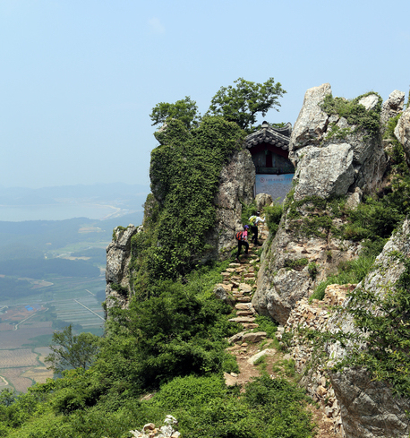

주요 관광지
-

달마고도
천년의 세월을 품은 태고의 땅으로 낮달을 찾아 떠나는 구도의 길을 주제로 2년여의 준비 끝에 개통된 달마고도는 장비를 사용하지 않고 순수 인력으로만 길을 내어 자연경관의 훼손을 최소화한 명품 수제길이다.
-
우수영 국민관광지
고려말 우왕 3년(1377) 무안 당곶포에 수군처치사영이 설치된 뒤 고종 32년(1895년) 폐쇄까지 약 500여년 동안 우리나라 서남해안을 지켜온 해군기지이다.
-
송호해수욕장
땅끝마을과 인접한 송호 해수욕장은 해남의 대표적인 해변이다. 2km에 달하는 백사장이 펼쳐져 있고 경사가 완만하고 백사장 옆쪽으로 노송이 가득하다. 수령 약 200년가량의 소나무 600여 그루가 자리한 이 송림은 전라남도 기념물에 지정됐다. 샤워장과 화장실, 음수대부터 오토캠핑장까지 있어 여유롭게 캠핑을 즐기기 좋다.
-
두륜산 케이블카
해남의 대표적인 산인 두륜산은 여덟개의 높고 낮은 연봉으로 이뤄졌다. 등산으로 산을 오르며 천천히 감상할 수도 있지만 케이블카를 이용해 조금 더 높은 곳에서 산을 바라볼 수도 있다. 케이블카를 타고 두륜산 전망대에 오르면 청산도, 완도, 진도까지 한눈에 내려다볼 수 있어, 탁 트인 전망을 감상할 수 있다.
왕복 이용료 | 대인 11,000원 소인 8,000원
맛집 및 카페
-

해남고구마빵 피낭시에
카페/베이커리
주소 | 전남 해남군 해남읍 읍내길 8 -

신창손순대국밥
한식
주소 | 전남 해남군 산이면 관광레저로 1673 -
트윈브릿지
카페/베이커리
주소 | 전남 해남군 문내면 관광레저로 5